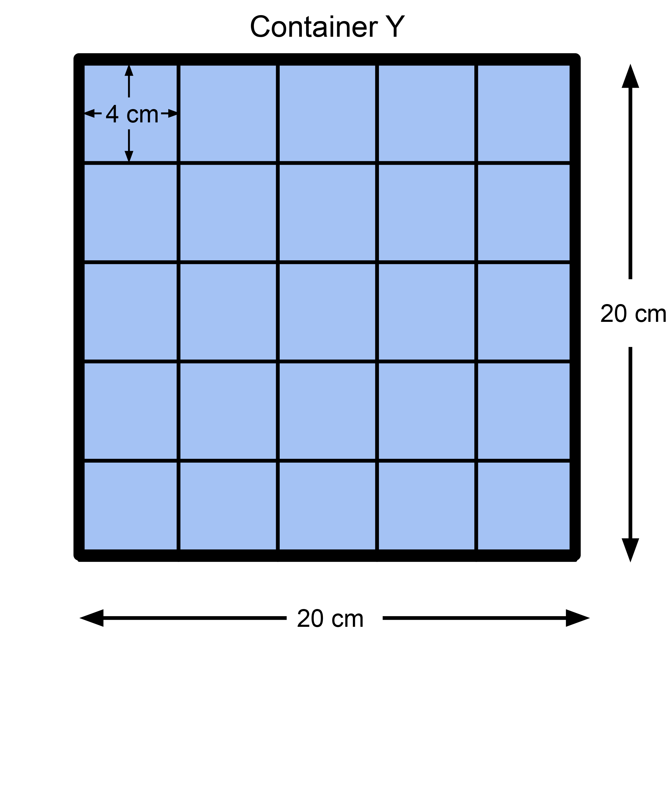

Problem
Jillian has two plastic containers that are the same height. The dimensions of these containers are shown below:
She always seals her containers with a lid when she stores things.
If Jillian filled each container with water, which container would hold more water? Justify your answer.
Jillian has many wooden blocks that are cubes with side lengths of 4 cm. Which container would hold more blocks if the blocks had to lie flat in the container? Justify your answer.
Solution
Since the containers are the same height, the capacity of each will depend on the area of each base. By either using the formula \(area = length \times width\), or by drawing the bases on grid paper, we see that:
Area of the base of Container X \(= 25 \times 18 = 450~\text{cm}^2\).
Area of the base of Container Y \(= 20 \times 20 = 400~\text{cm}^2\).Since the area of the base of Container X is greater than the area of the base of Container Y, that tells us Container X would hold more water.
To maximize the number of blocks in each container, Jillian can stack layers of blocks, where each layer is a rectangle made of blocks lying flat. The diagram below shows the largest rectangle of blocks that will fit in each container.

When we count the blocks, we see that \(6\times 4=24\) blocks can fit in one layer in Container X, while \(5\times 5=25\) blocks can fit in one layer in Container Y. Therefore Container Y can store more of these blocks than Container X.
Teacher’s Notes
To know which container can hold more water, we can simply compare the volumes. The volume of a rectangular prism is calculated using:
\[volume = length \times width \times height\]
So the volume of Container X is \(25 \times 18 \times 16 = 7200 \text{ cm}^3\),
and the volume of Container Y is \(20 \times 20 \times 16 = 6400 \text{ cm}^3\).
Since liquid can fill the entire volume of each container, then Container X would hold more water. However, when we are storing blocks, we cannot necessarily use all of the space in each container.
We can think of the volume of water as measuring continuous data, where the volume of blocks is measuring discrete data. If we pour water into a container, there is no “gap” in the volume of water as it is being added. However if we place blocks into a container, the volume of blocks increases by \(64 \text{ cm}^3\) each time we store another block.
The distinction between continuous and discrete data is important for mathematicians.